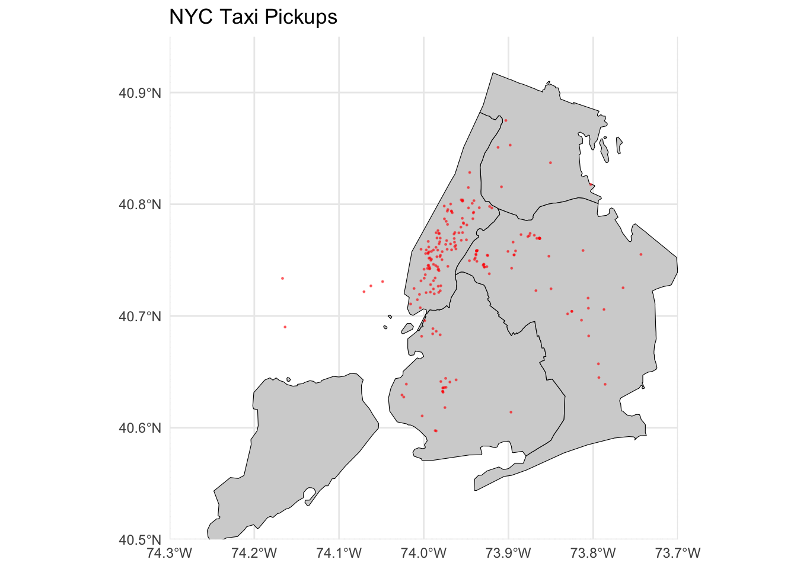
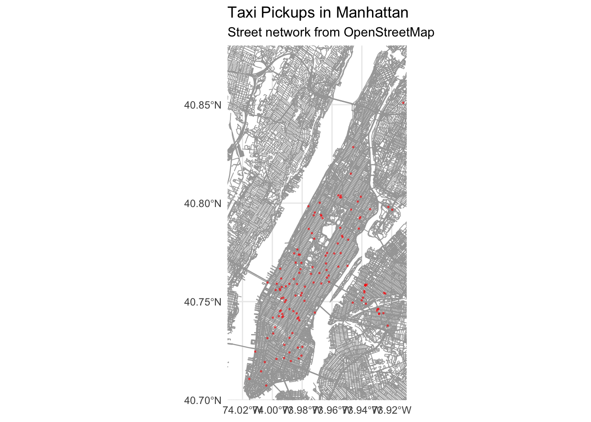

nyt <- open_dataset("../nyc-taxi")
nyt$schemaAssignment 06: Advanced Imports and Data Manipulations
STAT 150: R for Data Science
🚀 Import
I decided to use the same data that we used in the practice nyc-taxi 2012.
Also, after reviewing the presentation, I decided to combine duckdb, arrow, and dplyr.
📂 Open NYC Taxi Data
I use arrow to make working with the dataset easier and more efficient 💾🚖.
This allows me to explore and manipulate the data without loading the entire dataset into memory, which is very handy for large datasets like NYC Taxi 2012.
📊 First Data Exploration
We want to explore the dataset by looking at the number of rides in each month.
This will help us understand seasonal patterns in NYC taxi usage 🚖📈.
month_data <- nyt |>
to_duckdb() |>
summarise(
.by = c(month,vendor_name),
avr_dist = mean(trip_distance),
amount = n()
) |>
arrange(month, desc(avr_dist)) |>
collect()Warning: Missing values are always removed in SQL aggregation functions.
Use `na.rm = TRUE` to silence this warning
This warning is displayed once every 8 hours.Code
k <- month_data |>
mutate(
month = factor(month, levels = 1:12, labels = month.abb),
avr_dist = avr_dist * 1.60934
) |>
ggplot(aes(
x = month,
y = amount,
color = vendor_name,
group = vendor_name,
text= paste("Vender: ", vendor_name,"\n",
"Month: ", month,"\n",
"Trips: ", scales::comma(amount),"\n",
"Avg distance: ", round(avr_dist, 2), " km"
)
)) +
geom_line(linewidth = 0.7) +
geom_point(size = 2) +
scale_y_continuous(
labels = label_number(scale = 1e-6, suffix = "M"),
limits = c( 6 * 10^6, max(month_data$amount))
) +
scale_color_manual(values = c("CMT" = "#F5D042", "VTS" = "#0A174E")) +
labs(
title = "Number of Taxi Trips by Month and Vendor",
x = "Month",
y = "Number of Trips",
color = "Vendor"
) +
theme_minimal()
ggplotly(k, tooltip = "text")From this graph, we can clearly see that the difference between the peak month (March) and the lowest month (November) is more than one million rides 🚖📊.
We can also connect this to the price: my friend Anna Akhlamova investigated the avg() price per month, and in November the average price was the highest 💰.
This might explain why there were fewer rides in November compared to March.
🚦 Second Exploration
Now, we want to collect data for the top 200 pickup points based on the number of rides.
This helps us identify the busiest locations in NYC for taxi pickups 🗽🚖.
pickup_loc <- nyt |>
to_duckdb() |>
filter(month == 3) |>
select(pickup_longitude,
pickup_latitude) |>
summarise(
.by = c(pickup_longitude,
pickup_latitude),
n = n()
) |>
collect() |>
slice_max(n, n = 200)Code
ggplot() +
geom_sf(data = nyc_boroughs, fill = "lightgray", color = "black") +
geom_sf(data = pickup_loc_sf, color = "red", alpha = 0.5, size = 0.2) +
coord_sf(
xlim = c(-74.3, -73.7),
ylim = c(40.5, 40.95),
expand = FALSE
) +
theme_minimal() +
labs(title = "NYC Taxi Pickups")
From this, we can see that the most popular area in the whole of New York City is Manhattan 🏙️🚖.
Here is a more detailed view of the top pickup points to better understand where most rides start.
Code
bbox <- c(xmin = -74.03, ymin = 40.70, xmax = -73.91, ymax = 40.88)
manhattan_streets <- opq(bbox = bbox) |>
add_osm_feature(key = "highway") |>
osmdata_sf()
ggplot() +
geom_sf(data = manhattan_streets$osm_lines,
color = "gray65",
size = 0.3,
alpha = 1) +
geom_sf(data = pickup_loc_sf, color = "red", alpha = 0.5, size = 0.3) +
coord_sf(
xlim = c(-74.03, -73.91),
ylim = c(40.70, 40.88),
expand = FALSE
) +
theme_minimal() +
labs(title = "Taxi Pickups in Manhattan",
subtitle = "Street network from OpenStreetMap")